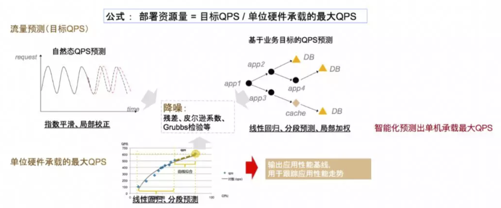

常用¶
低配生产环境子集-研发阶段性能瓶颈发现¶
方案价值:
这种环境下的压测，也是非常重要的一环。主要体现在项目研发阶段的价值上。
1. 新应用上线前，应用代码本身的瓶颈发现。
代码本身的性能问题，例如连接未释放，线程数过多，通过低配的环境，一定时长的压测完全可以提前发现很多
2. 应用维度基线数据。
跑出来的数据不能给线上做参考，
但是如果每次迭代，发布前，都在同一套低配环境运行性能压测，
跟低配基线数据进行对比，也能起到衡量系统迭代的时候，性能是否有提升或者下降的参考。
3. 帮助研发进行快速的性能调优。
系统越复杂的时候，发生性能问题后定位的难度会指数增加。
进行过性能调优的研发都有体会，有时候调优，就是改一个配置，然后重新部署，跑压测，看结果是不是改善了，直到找到最佳的配置。
这个过程如果不能轻量起来，对于研发调优就是噩梦。
存在的问题:
构建低配环境，可以是普通的测试环境，和线上完全隔离。但是要解决以下问题：
1. 压测会影响测试环境的功能测试。
这一点很容易理解。压力大了，可能影响同一套测试环境的功能测试结果，所以性能压测环境最好独立。
2. 依赖的基础应用在性能测试中没有。
例如要压测的目标业务是发贴，肯定会依赖到用户相关的业务，用户中心就是一个基础应用(当然很多小型公司可能没独立这块业务)。
3. 研发阶段无法快速部署要压的分支。
有一点规模的互联网公司，一周的迭代，同一个应用可能会有多个分支，需要支持快速部署指定的分支到性能环境。
同配生产环境子集 - 容量规划¶
方案价值:
容量规划是一个持续的过程，如何减少人力投入，如何才能“无人值守”。
1. 成本和效果平衡：尽量贴近线上运行环境，同时容量规划的数据对线上容量布置有很好的指导作用。
2. 完全独立不影响线上。
3. 随时可运行，结果可跟踪。
存在的问题:
容量规划不是直接在生产环境进行的，因为生产环境的最终容量配比，是参考自容量规划产出的数据。
在生产环境进行的压测,是最后的验收阶段，在容量规划完成之后。
提供一套独立的的生产环境子集-隔离环境,用于容量规划要解决的问题：
1. 构建的环境集如何定义,规模和架构如何贴近线上。
2. 流量如何走到隔离环境。
3. 隔离环境写的数据是否需要清理，如何清理?
如何解决:
隔离环境就是最新容量规划生态中的重要基础。隔离环境的支持，才能支撑常态化的容量规划运行，持续不断的改进。
1. 首先，提炼机器比例。
基于线上核心应用的现有规模情况，提炼出一个缩小版的完全模型。
即线上机器之间的比可能是5000:2000:1000，整体比例缩放100倍，在隔离环境的机器比是50:20:10。
使用这种方式，有效的保证了同线上机器同比例，同时成本上做了很好的控制。
2. 其次，确定隔离目标流量。
根据接下来线上的目标流量大小，同比例计算出隔离环境应该支撑的流量，作为隔离环境打压测流量时的目标流量。
3. 然后，通过压测流量从小到目标流量探索，边压边弹。
4. 最后，收集隔离环境达到目标流量后，新的机器比例及数据。
应用间的比例关系很可能已经有了改变，有的应用可能缩容，有的应用可能扩容，作为线上机器关系的参考。
这里面的涉及的技术细节还有很多:
1. 全链路压测新应用:
整个压测流量其实是沿用了线上压测的全链路压测机制，带流量标,数据落影子库的方式，所以隔离环境写的数据不需要特殊的处理。
2. 环境标隔离环境:
流量同时会带上一个“环境标”，通过环境标的识别，接入层会把流量导到隔离环境，从而做到流量的环境隔离。
3. "RPS"模式施压:
在系统整体的流量数据获取上，我们摒弃了一直以来备受追捧的"并发量"的方式。
众所周知，业务提出来的目标一般会是，"希望峰值支持xxxx个用户登陆"这种，
进行容量规划的时候需要将并发的用户数跟系统能承受的QPS，进行一个映射关系。
我们容量规划就直接使用阿里云压测平台(PTS)的"RPS"模式，
压出来拿到的QPS数据，直接是系统维度的数据，不用转换，这样也更减少了转换过程中的失真。
4. 边压边弹技术:
在隔离环境压测中，何时弹新机器，弹多少机器，整个过程如何控制，这里面包含了一整套完整精密的算法。
整个过程示意图如下:

生产环境复制版 - 云时代的优势¶
方案挑战:
生产环境复制版面临的挑战非常多。其中，如果要对生产环境进行完全的复制，将要面临以下挑战：
复制生产环境服务器的架构
复制生产环境网络基础环境
复制生产环境的所有应用分层
网络带宽
数据库以及所有的基础数据集
负载均衡
存在的问题:
对于传统时代的压测工程师来说，这样一系列的操作，就是新搭建一套“影子系统”了，看起来有点像不可能完成的任务。
要完成上述任务，压测工程师面临巨大的挑战：
1. 沟通协调几乎所有的技术部门(开发、运维、网络、IT...)；
2. 如果即用即销毁，那么劳民损财只用个一两次，成本太大；
3. 如果持续维护，那么维护成本显然同样不可忽略；
所以我们很少看到有公司进行这样的“生产环境复制”操作。
小型公司可能没那么多人力实现，大中型公司，成本就更加难以接受了。
但是现在云化趋势的潮流中，这种方案有其自身的先天优势。
总结¶
仿真的性能压测环境，是执行有效性能压测的前提。
不同的压测环境都有不同的应用场景，企业应根据自身情况进行选择。
规模中小的公司独立搭建一套隔离的压测环境成本高昂，可维护性差。
Note
关键词: 全链路压测
为保障服务的可用性和稳定性的重中之重。最佳的验证方法就是让事件提前发生，即让真实的流量来访问生产环境，实现全方位的真实业务场景模拟，确保各个环节的性能、容量和稳定性均做到万无一失，这就是全链路压测的诞生背景，也是将性能测试进行全方位的升级，使其具备“预见能力”。
要达成精准衡量业务承接能力的目标，业务压测就需要做到一样的线上环境、一样的用户规模、一样的业务场景、一样的业务量级和一样的流量来源，让系统提前进行“模拟考”，从而达到精准衡量业务模型实际处理能力的目标，其核心要素是：压测环境、压测基础数据、压测流量（模型、数据）、流量发起、掌控和问题定位。
流量模型的确定:
流量较大的时候可以通过日志和监控快速确定。 但是往往可能日常的峰值没有那么高，但是要应对的一个活动却有很大的流量， 有个方法是可以基于业务峰值的一个时间段内统计各接口的峰值，最后拼装成压测的流量模型。
脏数据的问题:
无论是通过生产环境改造识别压测流量的方式还是在生产环境使用测试帐号的方式，都有可能出现产生脏数据的问题，最好的办法是： 1. 在仿真环境或者性能环境多校验多测试: 有个仿真环境非常重要，很多问题的跟进、复现和debug不需要再上生产环境，降低风险。 2. 有多重机制保障: 比如对了压测流量单独打标还需要UID有较强的区分度，关键数据及时做好备份等等。监控:
由于是全链路压测，目的就是全面的识别和发现问题，所以要求监控的覆盖度很高。 从网络接入到数据库，从网络4层到7层和业务的，随着压测的深入，你会发现监控总是不够用。
压测的扩展:
比如我们会用压测进行一些技术选型的比对，这个时候要确保是同样的流量模型和量级， 可以通过全链路压测测试自动扩容或者是预案性质的手工扩容的速度和稳定性。 在全链路压测的后期，也要进行重要的比如限流能力的检验和各种故障影响的实际检验和预案的演练。
网络接入:
如果网络接入的节点较多，可以分别做一些DIS再压测，逐个确定能力和排除问题， 然后整体enable之后再一起压测确定整体的设置和搭配上是否有能力对不齐的情况。
参数调优:
压测之后肯定会发现大量的参数设置不合理，我们的调优主要涉及到了这些： 内核网络参数调整（比如快速回收连接）、Nginx的常见参数调优、PHP-FPM的参数调整等等，这些网上相关的资料非常多。
缓存和数据库:
1. 重要业务是否有缓存； 2. Redis CPU过高可以重点看下是否有模糊匹配、短连接的不合理使用、高时间复杂度的指令的使用、实时或准实时持久化操作等等。 同时，可以考虑升级Redis到集群版，另外对于热点数据考虑Local Cache的优化机制(活动形态由于K-V很少，适合考虑Local Cache) 3. 重要数据库随着压测的进行和问题的发现，可能会有索引不全的情况；
Mock服务:
一般在短信下发、支付环节上会依赖第三方，压测涉及到这里的时候一般需要做一些特殊处理，比如搭建单独的Mock服务，然后将压测流量路由过来。 这个Mock服务涉及了第三方服务的模拟，所以需要尽量真实，比如模拟的延迟要接近真正的三方服务。 当然这个Mock服务很可能会出现瓶颈，要确保其容量和高并发下的接口延时的稳定性， 毕竟一些第三方支付和短信接口的容量、限流和稳定性都是比较好的。
压测时系统的CPU阈值和业务SLA:
我们的经验是`CPU的建议阈值在50到70%之间`，主要是考虑到容器的环境的因素。 然后由于是互联网性质的业务，所以`响应时间也是将1秒作为上限`， 同时压测的时候也会进行同步的手工体感的实际测试检查体验。
其他:
1. 限流即使生效了，也需要在主要客户端版本上的check是否限流之后的提示和体验是否符合预期，这个很重要； 2. 全链路压测主要覆盖核心的各种接口，除此以外的接口也要有一定的保护机制， 比如有默认的限流阈值，确保不会出现非核心接口由于预期外流量或者评估不足的流量导致核心系统容量不足 （如果是Java技术栈可以了解下开源的Sentinel或者阿里云上免费的限流工具 AHAS） 3. 核心的应用在物理机层面要分开部署；